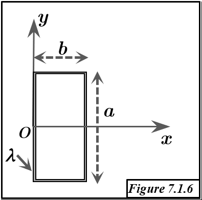

Solution Figure 7.1.6 : Rectangle linéique

FIGURE 7.1.6 - Rectangle A(0,a/2), B(0,-a/2), C(b,-a/2), D(b,a/2)
Méthode : Théorème de Guldin
- Principe : L'aire $S_{/\Delta}$ générée par la rotation d'une courbe de longueur $L$ autour d'un axe $\Delta$ (ne la coupant pas) est $S_{/\Delta} = L \times (2\pi R_G)$. $R_G$ est la distance de G (centre d'inertie) à $\Delta$.
- Objectif : Trouver $G=(x_G, y_G, z_G)$. Vu la planarité ($z=0$), $z_G=0$.
Géométrie
- Segments :
- AB : sur Oy, de (0, a/2) à (0, -a/2). Longueur $L_{AB} = a$.
- BC : $y=-a/2$, de (0, -a/2) à (b, -a/2). Longueur $L_{BC} = b$.
- CD : $x=b$, de (b, -a/2) à (b, a/2). Longueur $L_{CD} = a$.
- DA : $y=a/2$, de (b, a/2) à (0, a/2). Longueur $L_{DA} = b$.
- Longueur totale (périmètre) : $L_{tot} = 2a + 2b = 2(a+b)$.
Calcul du Centre d'Inertie $G = (x_G, y_G, 0)$
1. Coordonnée $x_G$ (Rotation autour de l'axe Oy)
- Axe de rotation : Oy ($x=0$). Distance de G à Oy : $R_{G, Oy} = x_G$.
- Surfaces générées par chaque segment :
- AB (sur Oy) : $S_{/Oy, AB} = 0$.
- BC (de $x=0$ à $x=b$, à $y=-a/2$) : Disque de rayon $b \implies S_{/Oy, BC} = \pi b^2$.
- CD (à $x=b$, de $y=-a/2$ à $y=a/2$) : Cylindre (rayon $b$, hauteur $a$) $\implies S_{/Oy, CD} = (2\pi b)a = 2\pi ab$.
- DA (de $x=b$ à $x=0$, à $y=a/2$) : Disque de rayon $b \implies S_{/Oy, DA} = \pi b^2$.
- Aire totale générée : $S_{/Oy} = 0 + \pi b^2 + 2\pi ab + \pi b^2 = 2\pi b^2 + 2\pi ab = 2\pi b (a+b)$.
- Application de Guldin : $S_{/Oy} = L_{tot} \times (2\pi x_G)$.
$$ 2\pi b (a+b) = (2(a+b)) \times (2\pi x_G) $$
- Calcul de $x_G$ : (Simplification par $4\pi(a+b)$, si $a+b \neq 0$)
$$ x_G = \frac{2\pi b (a+b)}{4\pi (a+b)} = \frac{b}{2} $$
2. Coordonnée $y_G$ (Rotation autour de l'axe $\Delta : y=-a/2$)
- Axe de rotation : $\Delta$ (ligne $y=-a/2$, contient BC). Distance de G à $\Delta$ : $R_{G, \Delta} = |y_G - (-a/2)| = |y_G + a/2|$.
(Attendu $y_G=0$, donc $R_{G,\Delta} = a/2$).
- Surfaces générées par chaque segment :
- AB (de $y=a/2$ à $y=-a/2$, à $x=0$) : Disque (rayon $a/2 - (-a/2) = a$) $\implies S_{/\Delta, AB} = \pi a^2$.
- BC (sur $\Delta$) : $S_{/\Delta, BC} = 0$.
- CD (de $y=-a/2$ à $y=a/2$, à $x=b$) : Disque (rayon $a/2 - (-a/2) = a$) $\implies S_{/\Delta, CD} = \pi a^2$.
- DA (à $y=a/2$, de $x=b$ à $x=0$) : Cylindre (rayon $a/2 - (-a/2) = a$, longueur $b$) $\implies S_{/\Delta, DA} = (2\pi a)b = 2\pi ab$.
- Aire totale générée : $S_{/\Delta} = \pi a^2 + 0 + \pi a^2 + 2\pi ab = 2\pi a^2 + 2\pi ab = 2\pi a (a+b)$.
- Application de Guldin : $S_{/\Delta} = L_{tot} \times (2\pi R_{G, \Delta})$.
$$ 2\pi a (a+b) = (2(a+b)) \times (2\pi |y_G + a/2|) $$
- Calcul de $y_G$ : (Simplification par $4\pi(a+b)$, si $a+b \neq 0$)
$$ |y_G + a/2| = \frac{2\pi a (a+b)}{4\pi (a+b)} = \frac{a}{2} $$
Comme $y_G$ est entre $-a/2$ et $a/2$ par symétrie, $y_G+a/2 \ge 0$.
$$ y_G + a/2 = a/2 \implies y_G = 0 $$
Résultat
Le centre d'inertie G du rectangle linéique a pour coordonnées :
$$ x_G = \frac{b}{2} $$
$$ y_G = 0 $$
$$ z_G = 0 $$
Soit $G = (b/2, 0, 0)$.
Conclusion
- Le centre d'inertie G du périmètre du rectangle coïncide avec son centre géométrique $(b/2, 0, 0)$.
- Ce résultat est conforme à la double symétrie du rectangle (par rapport à $x=b/2$ et $y=0$).
- Le théorème de Guldin, appliqué avec des axes de rotation appropriés (Oy et $y=-a/2$), a permis de dériver ce résultat.